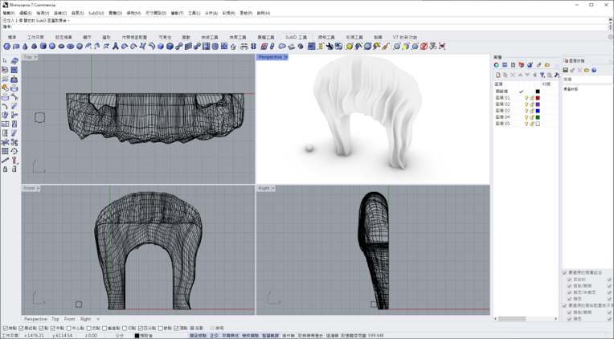
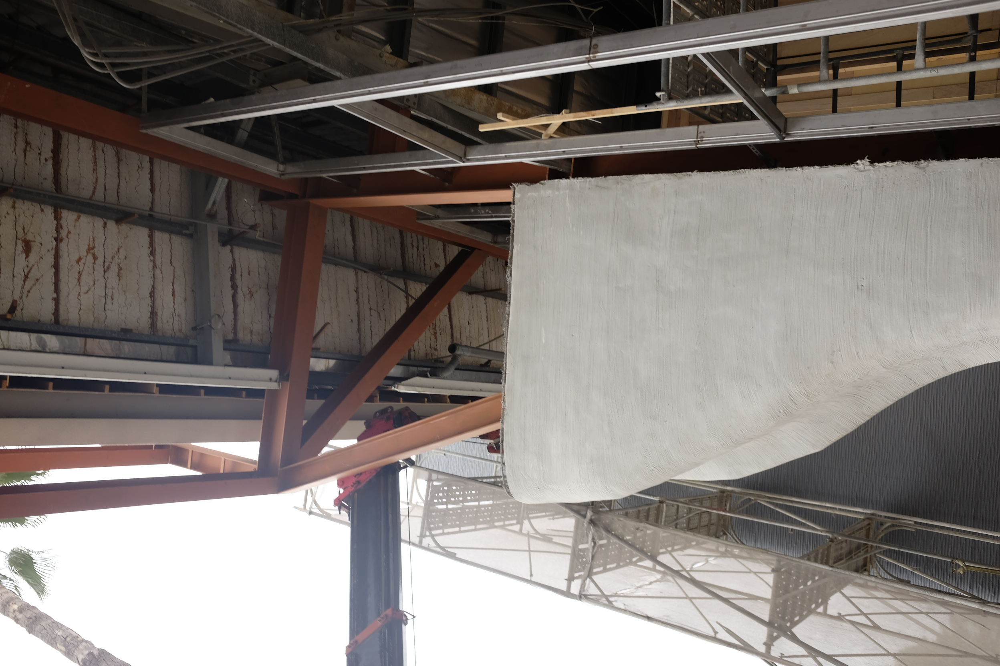

一、GRC 是什麼？玻璃纖維強化水泥的構造原理
在現代建築立面的演進歷程中，GRC（Glassfiber Reinforced Concrete，玻璃纖維強化水泥）是兼具美學塑形能力與結構安全性的關鍵複合材料。無論是古典歐式建築的複雜雕花線條、現代仿生建築的動態雙曲面，或是前衛科技建築的幾何格柵，GRC 均扮演著將建築師設計筆觸真實立體化的關鍵角色。
傳統水泥或混凝土材料雖具備極佳的抗壓強度，但其抗拉強度較弱且自重龐大，難以直接應用於複雜、薄型化或大跨距的外牆飾材構件中。
GRC 的核心構造原理，是將高耐鹼玻璃纖維（AR Glass Fiber）均勻交織於高強度水泥砂漿基材中。玻璃纖維在材料內部扮演著如同「微型鋼筋網」的角色，賦予 GRC 卓越的抗拉、抗彎韌性與高抗衝擊強度。這使得 GRC 構件能以僅 15mm 至 30mm 的薄型化規格生產，顯著減輕整體自重，同時提供極高程度的造型塑造自由度。
「美感，由設計定義；安全與耐久，由工程守護。好的 GRC 造型工程，是讓大膽的立面靈感無縫轉化為真實、安全且經得起歲月考驗的建築地標。」
二、為甚麼 GRC 能打造各種高難度造型？
許多建築師與設計師常問：「為什麼 GRC 材料能夠輕鬆做出傳統混凝土做不到的前衛造型與細緻線條？」 主要原因在於其獨特的材料物理特性與預鑄加工模式：
- 極高抗彎與抗拉強度：耐鹼玻璃纖維的加入，使 GRC 抗拉強度達到傳統混凝土的數倍，在承受高風壓與地震位移時不會輕易脆斷。
- 薄型化與高可塑性：不需要厚重的鋼筋保護層，構件可做成 15mm-30mm 的薄殼結構，能隨模具刻劃出細緻的雕花、波浪與漸變線條。
- 靈活的 3D 電腦開模技術：可結合高精度木模、矽膠模、鋼模或現代 3D 列印技術，將電腦軟體中的 3D 幾何模型 100% 翻製為實體水泥飾材。

騰煇 3D BIM 空間建模與拆圖放樣

騰煇專業團隊 GRC 構件現場高空吊掛安裝
三、GRC 工程具備哪些核心特點與優勢？
相較於傳統石材、鋁板或 FRP 飾材，專業 GRC 工程在現代建築應用中展現出四大不可替代的特點：
- 重量輕減、降低結構負載：GRC 自重僅為同等厚度混凝土的 1/5 至 1/10，能大幅減輕建築主體結構的自重負擔與地震應力傳導。
- A1 級耐火與高抗風壓防護：屬於無機不燃材料，符合國家最高等級防火規範，同時通過高樓層風洞抗風壓測試。
- 優異耐候與抗裂防滲性能：吸水率低、耐酸雨、抗紫外線老化，在台灣潮濕多雨的氣候環境下長期佇立不生白華或剝落。
- 騰煇毫米級公差控制與 3D 對齊：結合騰煇四十年工程經驗，從 3D 放樣到隱形鋼架背骨預埋，確保現場吊掛無縫拼合、零干涉拆改。
四、GRC 通常應用在哪些建築與景觀領域？
憑藉其多功能性，GRC 工程廣泛應用於以下領域：
- 歐式古典建築與雕花飾材：巴洛克造型線板、雕花柱頭、拱頂與古典羅馬柱。
- 現代有機雙曲面與動態立面：大型公共建築、展演中心流線型雙曲面外牆。
- 3D 幾何格柵與帷幕裝飾：參數化幾何透光格柵、金屬質感仿石外牆板。
- 舊大樓外牆拉皮與立面翻新：輕量化舊牆改造，不增加結構負擔，打造全新地標外觀。
- 景觀工程：大型戶外藝術雕塑、景觀假山水池與捷運站體裝飾。
五、騰煇 GRC 全台經典工程案例巡禮
騰煇將四十年預鑄工藝與數位放樣技術，實踐於全台多項指標性建築專案中：